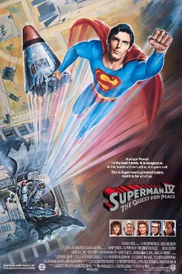

The genetics
Genetics provides the villain. Lex Luthor uses Superman's hair to build a 'genetic matrix', a vaguely described piece of genetic engineering that, combined with a nuclear explosion and solar energy, produces Nuclear Man, a hostile double of the hero made from his genetic material. Luthor is a criminal, not a scientist, and he deploys the creation for revenge on Superman and for profit, in league with black-market arms dealers. Genetics plays no other role; the film's message is about nuclear disarmament, and the genetic creation of Nuclear Man is a comic-book device with no scientific plausibility (the idea that a person can be grown from a strand of hair inside a missile thrown into the Sun). It does echo the popular notion of cloning from a single hair or cell.
How genetics is portrayed
- Overall portrayal of genetics
- negative The only genetics in the film is a criminal's weapon against the hero; it is shown as a dangerous tool of villainy.
- Outcome of the genetic intervention
- negative The genetic creation, Nuclear Man, wounds Superman with radiation, wrecks landmarks and kidnaps Lacy before being destroyed.
- Lex Luthor
- villain Aim: malevolent, commercial, power (negative). The escaped convict makes a genetic matrix from Superman's hair to create Nuclear Man, to destroy Superman and to help arms dealers restore the nuclear trade; he is the film's villain and ends back in prison.
The story
Superman decides to rid the world of nuclear weapons after a boy writes to him, announces his plan at the United Nations and hurls the world's warheads into the Sun. Meanwhile Lex Luthor, freed from prison by his nephew Lenny, steals a strand of Superman's hair from a museum and uses it to make a 'genetic matrix'. Backed by arms dealers who want the arms race to continue, he attaches it to a nuclear missile; when Superman throws the missile into the Sun, the matrix gives rise to Nuclear Man, a solar-powered super-being loyal to Luthor. Nuclear Man wounds Superman with radioactive claws; Superman heals himself with a Kryptonian energy module, defeats him by cutting off his sunlight and feeds him into a nuclear reactor. A subplot follows the tabloid takeover of the Daily Planet. Superman returns the Luthors to custody.